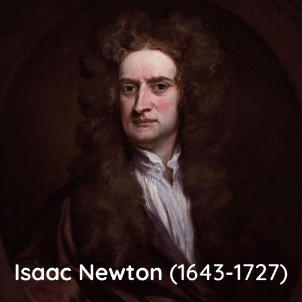

Sobre Newton
Isaac Newton nasceu em Woolsthorpe, Inglaterra no dia 4 de janeiro de 1643 (curiosamente, no mesmo ano do falecimento de Galileu) foi um físico, astrônomo e matemático.
Newton não tinha uma personalidade cativante, pois era solitário, vingativo e reagia mal às críticas.
Descobertas:
Em 1665, houve "A Grande Praga", uma epidemia de peste bulbônica que afetou a Inglaterra, levando Newton a se afastar da universidade e a permanecer por um bom tempo na fazenda de sua família
Lá, desenvolveu as principais ideias da Teoria das Fluxões,os conceitos sobre o Cálculo Diferencial e Integral, além de desenvolver o Binômio "de Newton" e o Método das Séries Infinitas, entre outros.

Suas pesquisas sobre a formulação das 3 leis do movimento (que falamos nesse site :)) levou à lei da
gravitação universal;
Também formulou teorias sobre Óptica e fez pesquisas, estudando sobre a decomposição da luz branca em
prismas;
Em relação à matemática, lançou fundamentos e cálculos, ampliando os horizontes para pesquisadores.

"Se enxerguei mais longe, foi porque me apoiei sobre os ombros de gigantes" NEWTON, Isaac.